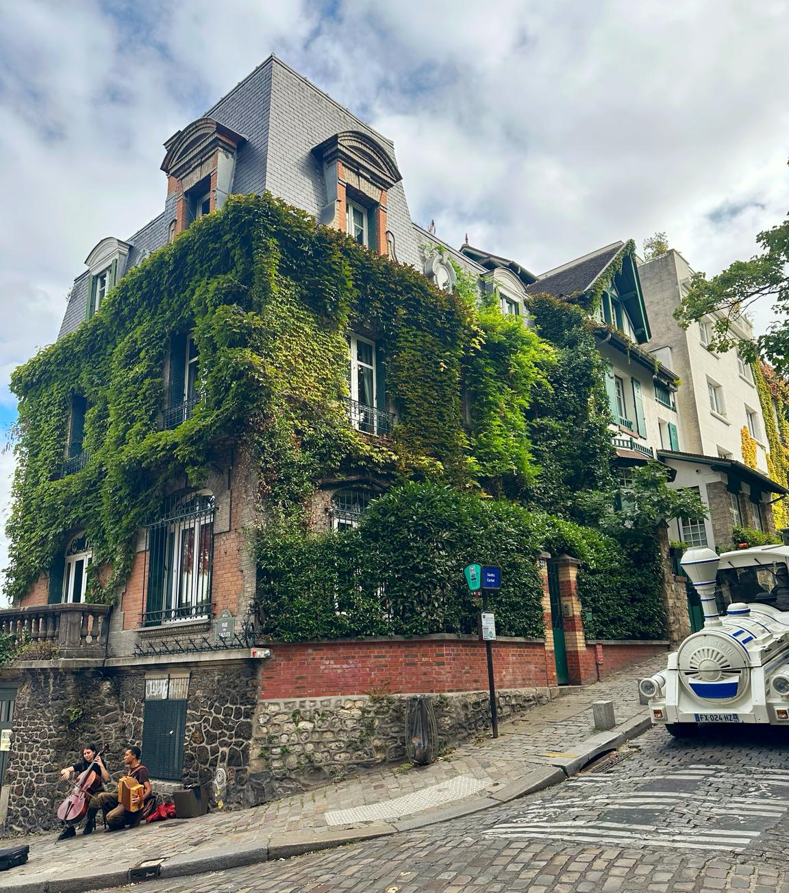
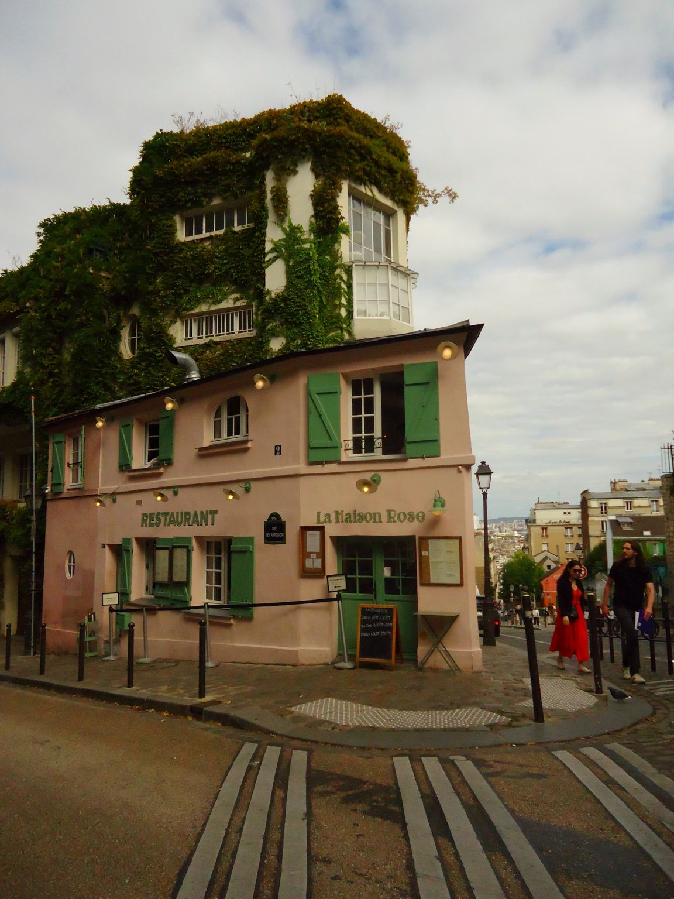
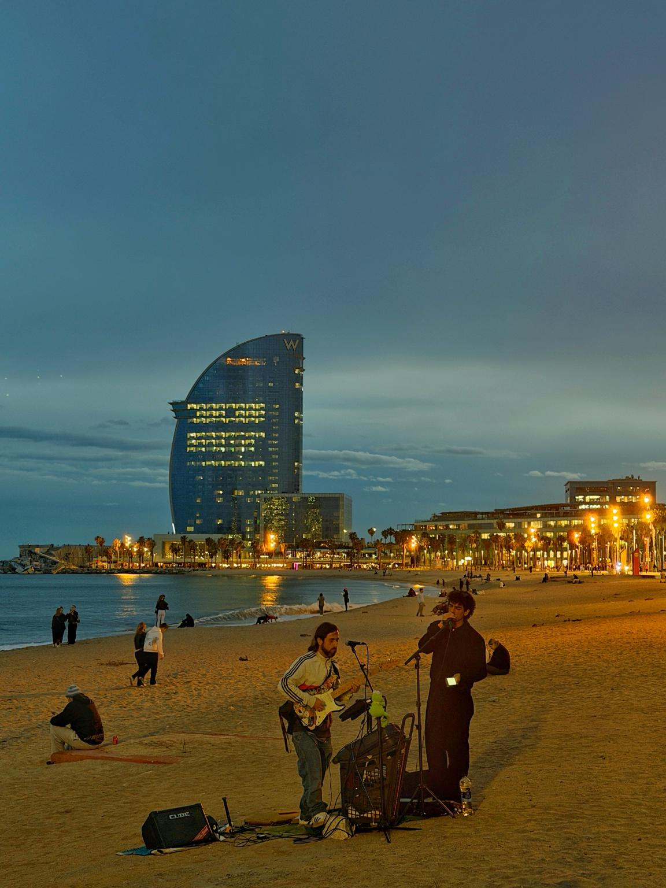
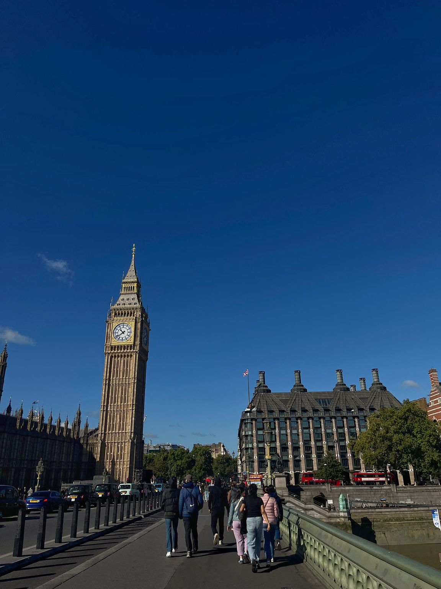
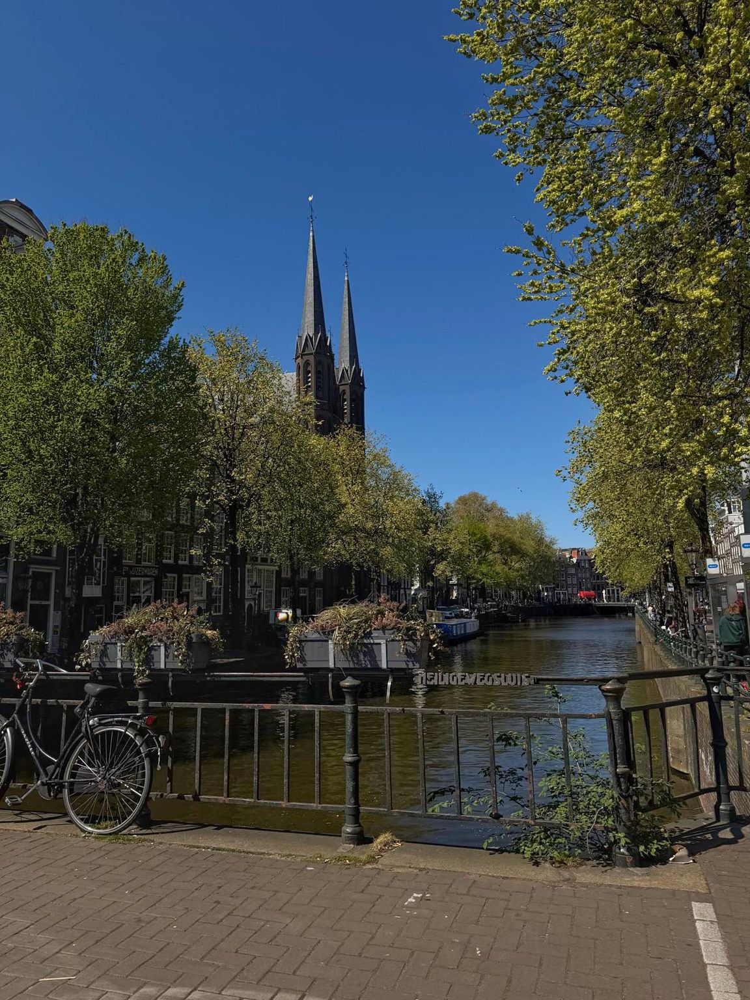
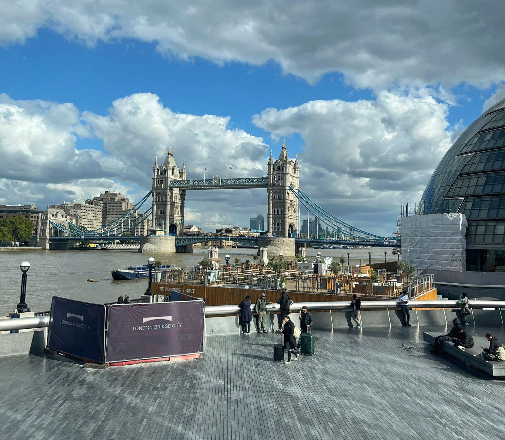

Travel Blog — Europa
Un jurnal vizual al calatoriilor noastre prin orasele Europei — Paris, Londra, Amsterdam, Barcelona.
Galerie foto
Montmartre, cu strazile sale pavate si casele acoperite de iederă, este unul dintre cele mai pitoresti cartiere pariziene. Fiecare colt ascunde o poveste.


Galerie foto
Canalele, bicicletele si turnurile gotice — Amsterdam are o energie aparte in orice anotimp.

Galerie foto
Londra combina arhitectura victoriana cu modernul intr-un mod cu totul special. Westminster si Thames Southbank raman destinatii emblematice.


Galerie foto
Plaja Barceloneta la apus — nisip auriu, muzica live si silueta hotelului W in fundal.

Echipa
Calin Andrei David
Andrescu Claudia Maria
Acest site reprezinta proiectul pentru disciplina Multimedia Marketing, realizat in cadrul Academiei de Studii Economice din Bucuresti, Facultatea de Marketing, Anul II, Grupa 1721A, Seria A.
Proiect realizat de: Calin Andrei David si Andrescu Claudia Maria. Tema aleasa: Travel Blog — Europa. Imaginile sunt originale, realizate si procesate personal, folosind tehnici de editare prezentate in materialele de curs.